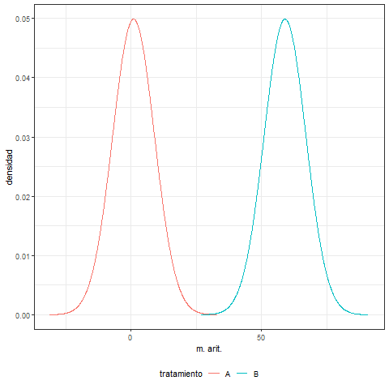
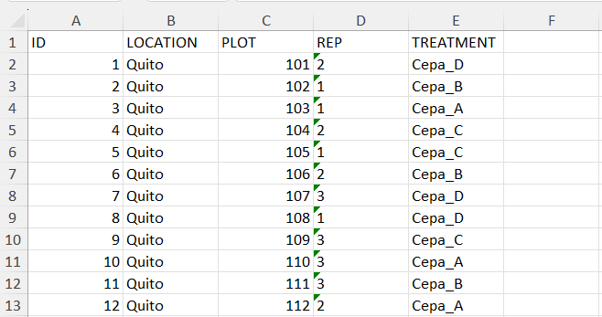
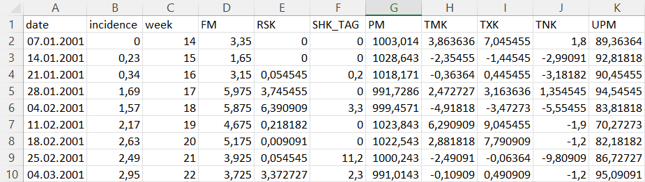
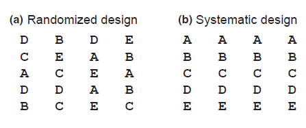
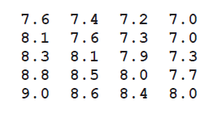

Estadística aplicada con R
Módulo 2: Principios básicos de Diseño de Experimentos
Científico Bioestadístico en Bayer AG
¿Qué debes tomar en cuenta antes de empezar una investigación?
Pasos en una investigación
¿Cuál es la pregunta qué deseo contestar? ¿cuál es mi objetivo?
Superioridad de un tratamiento vs. un control
Equivalencia de un tratamiento vs. una referencia
Asociación/dependencia/correlación entre una o más variables
¿Qué tipo de estudio voy a llevar a cabo?
- Experimental
¿Qué tipo de variables voy a medir?
- Es mi respuesta continua o discreta
¿Cuál es el dominio de esas variables?
- Mi respuesta puede tomar cualquier valor real (positivo la mayor parte del tiempo)
Pasos en una investigación
¿Cuál es el dominio de esas variables? (continuación)
Mi respuesta es un porcentaje (entre 0 y 100)
Mi respuesta es dicotómica (si/no)
Mi respuesta es un conteo (puede ser descrita con números enteros únicamente)
Mi respuesta es una proporción (valores entre 0 y 1)
Mi respuesta es categórica y representa un orden
Mi respuesta es categórica pero no representa un orden
Si mi estudio es experimental, ¿qué diseño experimental voy a utilizar para levantar mis datos?
Diseño completamente al azar (DCA)
Diseño de bloques completamente al azar (DBCA)
Diseño factorial completo (DFC)
Pasos en una investigación
Si mi estudio es observacional, ¿qué tipo de muestreo voy a llevar a cabo?
Simple
Estratificado
¿Cuál debería ser el tamaño de mi muestra?
¿Qué método(s) estadístico(s) voy a utilizar para analizar mis datos?
¿Qué No debería hacer antes de realizar una investigación?
- Empezarla sin haber pensado en todas las preguntas anteriores y esperar tener resultados estadísticamente válidos.
- Un principio básico del método científico es el análizar los datos en base a un protocolo pre-establecido, y NO a decidir qué análisis llevar a cabo una vez que se ven los datos.
Pasos en una investigación
Tipos de Estudios
Estudios experimentales
El investigador trata de controlar en la medida de lo posible todos los aspectos de la investigación.
Los análisis estadísticos son relativamente más sencillos.
Estudios observacionales
El investigador no tiene mayor control sobre los aspectos que afectan la investigación.
El investigador muchas veces se límita a un rol de observador (por cuestiones éticas o prácticas).
Es más frecuente que los análisis sean más complejos.
¿Cómo puedo comenzar?
- Revisión bibliográfica
- Consultar a expertos en el campo


- Pre-experimentos
- Consultar a un experto en estadística
Pilares del Diseño de Experimentos (DDE)
Repetición/Replicacion: es la aplicación de los tratamientos a un determinado número de unidades experimentales (al menos 3). Puede ser igual al tamaño de muestra en ciertos casos.
Aleatoriedad/Randomización: la asignación de unidades experimentales a un tratamiento debe realizarse al azar. Esto evita sesgos en las inferencias estadísticas al precautelar la independencia de los datos recolectados.
Balance: se refiere al intentar el siempre tener un número igual de unidades experimentales en los tratamientos de interés. Datos no balanceados requieren de métodos estadísticos corregidos.
Pilares del DDE
- El objetivo general es el explicar (modelar) la variabilidad de un conjunto de datos y cómo en base a esta determinamos si hay o no diferencias entre los tratamientos de los que se originaron los mismos.

Pilares del DDE
Controlar las condiciones de un experimento, en términos estadísticos refiere a controlar las fuentes de variación.
A menor variación, más precisas serán nuestras inferencias. Pero frente a cero variación NO es posible ninguna inferencia.
Por ello necesitamos el contar con mínimo tres repeticiones por tratamiento y randomizar siempre.
Una pobre randomización no garantiza la independencia de nuestras observaciones y puede llevarnos a obtener resultados sesgados.
Pilares del DDE
En breves rasgos, las fuentes de variación son
Variación dentro de los tratamientos: dada por la diferencia entre las repeticiones dentro de un tratamiento con respecto a su media aritmetica. Es asumida como producto entero del azar.
Variación entre los tratamientos: dada por la aplicación del tratamiento (factor o factores objeto de estudio). Por ejemplo, la eficiencia de reducir N por tres distintas cepas de bacterias.
Sobre las repeticiones
A veces los recursos para llevar a cabo un estudio son limitados y recurrimos a esta práctica para contar con 3 repeticiones por tratamiento:
Tengo las cepas A, B, C y D de bacterias degradadoras de nitrógeno y quiero saber cual de ellas tiene la mejor eficiencia a tres concentraciones de nitrógeno. Cada botella con caldo de cultivo es voluminosa y no tengo el espacio necesario para llevar a cabo tres repeticiones por tratamiento. Solución: preparo una botella de caldo por cepa y concentración (12 en total) y tomo 3 medidas (repeticiones) de cada una.
¿Cuál es el problema?, pues que esta práctica no responderá satisfactoriamente esa pregunta
Sobre las repeticiones
Existen dos tipos de repeticiones:
Repeticiones biológicas: Cuando tomamos una y solo una medida de una unidad experimental (en el ejemplo anterior necesitaríamos 36 botellas, 3 por cada combinación cepa \(\times\) concentración de N)
Repeticiones técnicas: Cuando tomamos más de una medida de una unidad experimental (lo que vimos en el ejemplo anterior, 12 botellas, una por cada combinación cepa \(\times\) concentración de N)
Sobre las repeticiones
Ambas prácticas son por supuesto adecuadas, siempre y cuando sepamos que se usan para objetivos de investigación distintos, y los métodos de análisis también son distintos:
Repeticiones biológicas: Las usamos cuando deseamos hacer inferencias acerca de una población en general. El principio de independencia se mantiene y por tanto requieren metodología estándar (modelos lineales generalizados).
Repeticiones técnicas: Las usamos cuando el enfoque es hacer inferencias sobre un inviduo o probando un método, esto por cuanto es natural que las medidas al venir de una misma unidad experimental estén correlacionadas. En este caso, métodos más complejos son necesarios (modelos lineales generalizados mixtos).
Existen tambien los casos donde ambos tipos de repetición son usados. Ejemplo: para determinar la eficiencia de un insecticida en 3 parcelas experimentales (repeticiones biológicas), se realizan conteos de larvas/insectos en 4 puntos dentro cada una (repeticiones técnicas).
Para mayor información, visita este enlace
Sobre las repeticiones
¿Son 3 repeticiones sufientes por tratamiento?, y ¿por qué 3?
Tres repeticiones son una convención que no ha sido demostrada satisfactoriamente, pero es ampliamente adoptada.
Una manera de determinar de manera técnica el número apropiado de repeticiones es llevar a cabo análisis de poder.
Los análisis de poder requieren de información previa acerca de la variación esperada y el tamaño del efecto (diferencia entre tratamientos) a detectar.
Esto requiere de investigación bibliográfica, o conducción de ensayos piloto.
Sobre las repeticiones
¿Cuándo el número de repeticiones es igual al tamaño de la muestra?
Es común el confundir estos dos términos, más que nada por el contexto:
Cuando hablamos de un experimento con un solo factor (por ejemplo si tenemos una pregunta puntual cómo si la media aritmética de una muestra difiere de un valor establecido), el número de repeticiones coincide con el tamaño de la muestra.
Cuando hablamos de un experimento con dos o más factores (un grupo control y otro experimental por ejemplo), el tamaño de la muestra refiere al total de unidades experimentales en todo el experimento, y el número de repeticiones se refiere al número de unidades experimentales por tratamiento.
Sobre el tamaño de la muestra
Ya que hemos hablado de las repeticiones, ¿has escuchado del número 30?
30 es el número mágico considerado como el mínimo de observaciones requeridas para llevar a cabo un experimento.
Como otros números en estadística, proviene de convenciones adoptadas a lo largo del tiempo mas que de teoremas completamente indiscutidos.
El número 30 ha sido demostrado como una falacia en diversas ocasiones
Sin embargo, 30 es un buen punto de inicio si conocimiento bibliográfico o pre-experimentos no están disponibles para llevar a cabo análisis de poder.
Ahora sí, ¡momento de planear nuestro experimento!
Una vez que hemos repasado los fundamentos del DDE, la pregunta que cabe es: ¿Cómo planeo ya sea un DCA, un DBCA o un DFC?
Debemos tener en mente que los pilares más importantes a considerar, son las repeticiones y la randomización. El balance viene a ser más un aspecto operacional.
El llevar a cabo una buena randomización puede resultar desafiante, sobre todo conforme la complejidad del diseño experimental aumenta.
Puede llevarse a cabo de manera manual (lanzando una moneda por ejemplo). Sin embargo, toda práctica manual puede tender a imponer sesgo.
Afortunadamente contamos con la ayuda de la librería
FielDHub, así que antes de hablar en mayor detalle de ella, instalémosla
Librería FielDHub
FielDHubes una librería de R para DDE que ayuda en la creación de diseños experimentales con enfoque hacia agricultura, reproducción de plantas, silvicultura, ciencias animales y biológicas.Cuenta con capacidad de crear una diversidad de diseños tales como: DCA, DBCA, DFC, DBCA aumentado, diseño de bloques incompletos, diseño cuadrado latino …
Para mayor información, puedes visitar la página oficial de la librería o la página en CRAN
Diseño completamente al azar (DCA)
Considera las dos fuentes base de variación (dentro y entre tratamientos).
Regresando al ejemplo de nuestras bacterias, ¿cómo planeamos un DCA?.
Tenemos las cepas bacterianas A, B, C y D, y por el momento supongamos solo queremos saber si son capaces de reducir N a una misma concentración (algo como un screening previo en nuestra experimentación)
library(FielDHub)
dca.bacterias <- CRD(t = 4, # número de tratamientos
reps = 3, # número de repeticiones por tratamiento
plotNumber = 101, # número que asignamos al primer tratamiento
locationName = "Quito", # nombre del lugar donde se lleva a cabo el experimento
seed = 123) # número que hace reproducible el diseño Diseño completamente al azar (DCA)
Demos un vistazo al objeto dca.bacterias
Completely Randomized Design (CRD)
Information on the design parameters:
List of 5
$ numberofTreatments: num 4
$ treatments : chr [1:4] "T1" "T2" "T3" "T4"
$ Reps : num 3
$ locationName : chr "Quito"
$ seed : num 123
10 First observations of the data frame with the CRD field book:
ID LOCATION PLOT REP TREATMENT
1 1 Quito 101 2 T4
2 2 Quito 102 1 T2
3 3 Quito 103 1 T1
4 4 Quito 104 2 T3
5 5 Quito 105 1 T3
6 6 Quito 106 2 T2
7 7 Quito 107 3 T4
8 8 Quito 108 1 T4
9 9 Quito 109 3 T3
10 10 Quito 110 3 T1Diseño completamente al azar (DCA)

Diseño completamente al azar (DCA)
Diseño completamente al azar (DCA)
La disposición espacial de nuestros tratamientos está dispuesta en formato “serpentín”
Diseño completamente al azar (DCA)
Diseño completamente al azar (DCA)
Unos toques finales
ID LOCATION PLOT REP TREATMENT
1 1 Quito 101 2 Cepa_D
2 2 Quito 102 1 Cepa_B
3 3 Quito 103 1 Cepa_A
4 4 Quito 104 2 Cepa_C
5 5 Quito 105 1 Cepa_C
6 6 Quito 106 2 Cepa_B
7 7 Quito 107 3 Cepa_D
8 8 Quito 108 1 Cepa_D
9 9 Quito 109 3 Cepa_C
10 10 Quito 110 3 Cepa_A
11 11 Quito 111 3 Cepa_B
12 12 Quito 112 2 Cepa_AEjercicio 2.1
¿Cuál sería la disposición de las botellas en una estantería bajo un DCA, si tenemos 6 cepas (“cepa_1” hasta “cepa_6”) y planeamos tener 4 repeticiones por tratamiento?, (utiliza seed = 1460)
Diseño en bloques completamente al azar (DBCA)
Un DBCA introduce el modelado de una tercera fuente de variación: el bloque
El bloque es una adición que ayuda a controlar mejor los errores aleatorios al disponer los tratamientos randomizados en tantas unidades físicas como repeticiones se desee.
El bloque en el contexto del experimentador, podría referirse en nuestro ejemplo, a las estanterías que utilizaríamos para colocar nuestras botellas con medio de cultivo. Es de esperarse que al encontrarse las estanterías expuestas a pequeñas diferencias (luz, humedad, temperatura) entre una y otra, sus errores aleatorios sean distintos.
El efecto del bloque busca regularizar dichas diferencias.
Diseño en bloques completamente al azar (DBCA)
ID LOCATION PLOT REP TREATMENT
1 1 QUITO 101 1 Cepa_C
2 2 QUITO 102 1 Cepa_D
3 3 QUITO 103 1 Cepa_A
4 4 QUITO 104 1 Cepa_B
8 5 QUITO 201 2 Cepa_A
7 6 QUITO 202 2 Cepa_D
6 7 QUITO 203 2 Cepa_B
5 8 QUITO 204 2 Cepa_C
9 9 QUITO 301 3 Cepa_C
10 10 QUITO 302 3 Cepa_A
11 11 QUITO 303 3 Cepa_B
12 12 QUITO 304 3 Cepa_DEjercicio 2.2
¿Cuál sería la disposición de las botellas en 3 estanterías bajo un DBCA, si tenemos 6 cepas (“cepa_1” hasta “cepa_6”)?, (utiliza seed = 1460)
Diseño factorial completo (DFC)
Antes de continuar, no hemos definido exactamente qué entendemos por tratamiento.
En nuestro ejemplo, el tratamiento ha sido determinado por las distintas cepas a evaluar.
Sin embargo, es más común encontrarnos con preguntas de investigación que tienen mayor nivel de complejidad:
- Desde el punto de vista biológico, el saber si una determinada cepa puede degradar N a una única concentración no parece tan crucial. De manera lógica, sería de mayor interés el evaluar las cepas a distintas concentraciones de N como inicialmente planteamos el ejemplo.
Diseño factorial completo (DFC)
Es decir, hasta el momento, nuestros tratamientos están definidos por dos factores:
Las 4 cepas bacterianas
Una única concentración de N
¿Qué tienen en común estos dos factores? ¡ambos son controlados por el investigador!
En resumen, un tratamiento se define cómo el uso de un solo factor o la combinación de dos o más factores a evaluar en un conjunto (muestra) de unidades experimentales y sobre los cuales el investigador tiene total control.
Un factor está conformado por \(n\) niveles, en nuestro ejemplo hasta el momento tenemos lo siguiente:
- Factor 1: Cepa
- Niveles: 4 (“A”, “B”, “C” y “D”)
- Factor 2: Concentración de N
- Niveles: 1 (una misma concentración de N para todos los niveles del factor 1)
- Factor 1: Cepa
Diseño factorial completo (DFC)
Regresando al hecho de que evaluar las cepas a distintas concentraciones de N sería mas interesante, el DFC nos ofrece precisamente esa posibilidad.
El DFC es una extensión del DCA y el DBCA que nos permite evaluar tratamientos donde los factores que los conforman tienen 2 o más niveles cada uno.
Así, digamos que queremos evaluar 3 distintas concentraciones de N. Entonces, nuestros tratamientos estarán determinados por los factores cepa y N de la siguiente manera:
- Factor 1: Cepa
- Niveles: 4 (“A”, “B”, “C”, “D”)
- Factor 2: Concentración de N
- Niveles: 3 (“N1”, “N2”, “N3”)
- Factor 1: Cepa
Diseño factorial completo (DFC)
DCA factorial completo
FACTORS <- rep(c("CEPA", "N"), c(4,3))
LEVELS <- c("A", "B", "C", "D", "N1", "N2", "N3")
data_factorial <- data.frame(list(FACTOR = FACTORS, LEVEL = LEVELS))
dfc.dca.bacterias <- full_factorial(setfactors = NULL,
reps = 3,
l = 1,
type = 1,
plotNumber = 101,
seed = 123,
locationNames = "Quito",
data = data_factorial) ID LOCATION PLOT REP FACTOR_CEPA FACTOR_N TRT_COMB
1 1 Quito 101 3 A N3 A*N3
2 2 Quito 102 2 B N1 B*N1
3 3 Quito 103 3 D N3 D*N3
4 4 Quito 104 1 B N3 B*N3
5 5 Quito 105 1 B N3 B*N3
6 6 Quito 106 1 A N1 A*N1
7 7 Quito 107 2 C N3 C*N3
8 8 Quito 108 1 A N1 A*N1
9 9 Quito 109 2 D N2 D*N2
10 10 Quito 110 3 B N2 B*N2
11 11 Quito 111 3 B N2 B*N2
12 12 Quito 112 1 A N1 A*N1
13 13 Quito 113 2 D N2 D*N2
14 14 Quito 114 1 D N1 D*N1Diseño factorial completo (DFC)
DBCA factorial completo
ID LOCATION PLOT REP FACTOR_CEPA FACTOR_N TRT_COMB
1 1 Quito 101 1 D N2 D*N2
2 2 Quito 102 1 B N1 B*N1
3 3 Quito 103 1 A N2 A*N2
4 4 Quito 104 1 B N3 B*N3
5 5 Quito 105 1 A N3 A*N3
6 6 Quito 106 1 C N3 C*N3
7 7 Quito 107 1 D N3 D*N3
8 8 Quito 108 1 A N1 A*N1
9 9 Quito 109 1 B N2 B*N2
10 10 Quito 110 1 C N1 C*N1
11 11 Quito 111 1 D N1 D*N1
12 12 Quito 112 1 C N2 C*N2
24 13 Quito 201 2 A N3 A*N3
23 14 Quito 202 2 B N2 B*N2Ejercicio 2.3
En nuestro ejemplo de las bacterias degradadoras de N:
El investigador está también interesado en evaluar la reducción de fósforo en 3 concentraciones (P1, P2 y P3)
¿Cómo serían las disposiciones de las botellas de medio de cultivo bajo un DCA y un DBCA factoriales completos si queremos 3 repeticiones?
¿Cuál es el número total de tratamientos ahora?
Usando el fieldBook
- La tabla de datos
fieldBookpodemos exportarla a un archivo Excel con ayuda de la libreríaopenxlsx

Ejercicio 2.4
Exporta las tablas fieldBook de los ejercicios anteriores a archivos de Excel. Recuerda el comando setwd()
¡Antes de terminar por hoy!
Como mantener tus datos óptimamente ordenados
- Regresando al ejemplo del archivo de Excel “rotXLS.xlsx” que importamos en el primer módulo, si lo comparamos con los field books que exportamos, ¿qué es diferente entre ellos?

Como mantener tus datos óptimamente ordenados
- Existen dos tipos de tablas: de formato ancho (wide format) y de formato largo (long format)
Como mantener tus datos óptimamente ordenados
El formato largo es la dispocisión mas natural para que una computadora lo acceda (operaciones son más sencillas al iterar sobre filas, anexar nuevas filas es más sencillo al no tener que crear nombres nuevos para mas columnas).
Es aconsejable que para un mejor acceso a tus datos, lleves el registro de tus observaciones en formato largo.
Es posible convertir de formato ancho a largo, pero requiere un poco de práctica y paciencia.
¿Por qué randomizar?
Para la mayoría el concepto de randomizar seguro es una práctica necesaria en investigación así no contemos con entrenamiento estadístico formal.
Sin embargo, el debate acerca del tema se remonta desde el tiempo de los padres de la estadística moderna, Fisher y Gosset, hasta el día de hoy que existen aún personas que no “creen” en la necesidad de randomizar experimentos.
Para demostrar esta indiscutible necesidad, vamos a enfocarnos en un práctico ejemplo entre tantos otros disponibles en la literatura científica propuesto por Piepo, H. P. et al. (2013).
¿Por qué randomizar?
En el ejemplo de Piepo, H. P. et al. (2013)., nos propone este escenario:
Se desea saber el rendimiento de 5 variedades de trigo (A, B, C, D y E) que serán dispuestos en 20 parcelas (4 parcelas por variedad).
Por error, las bolsas de semillas que se envían a la estación experimental contienen únicamente semillas de la variedad A a pesar de estar etiquetadas como correspondientes a las cinco variedades inicialmente contempladas.
Un DDE propiamente randomizado, hubiese sido capaz de dar luces para encontrar el error, sin embargo esto no sucede. De hecho, los investigadores conduciendo el experimento determinan que existen diferencias entre el rendimiento de las supuestas semillas de distintas variedades. ¿Qué pasó?
¿Por qué randomizar?

